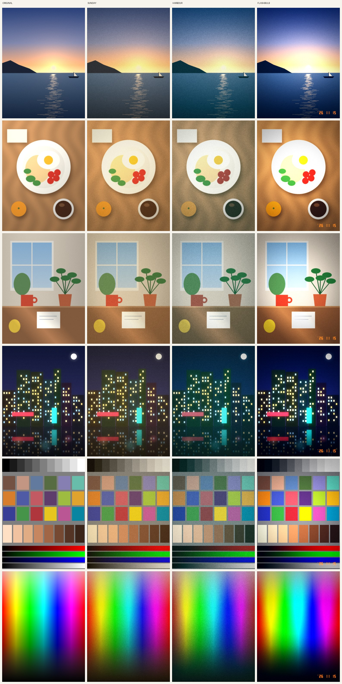
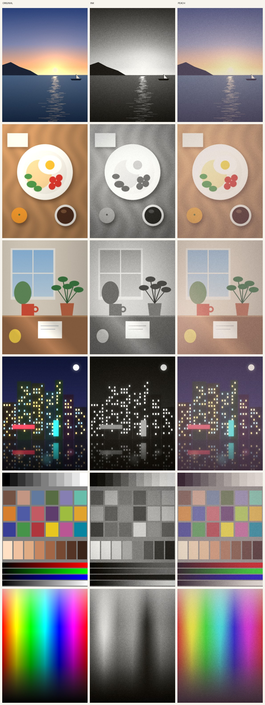

Asset review
First drafts of everything Poto ships with at launch. All of it is generated by the scripts in assets-src, so anything can be tuned and re-made. Tell Claude what to change, or edit the numbers at the top of each script.
Film looks
Each look on each test image. Columns: original, Sunday, Harbour, Flashbulb. The scenes are synthetic stand-ins until your six reference photos are in assets-src/looks/reference/.

Drafts, not shipped: Ink (black and white) and Peach (pastel).

Papers and inks
Cream and Kraft, with both text styles. Tap an ink to try it. Sepia and Red are drafts for later.
the light was like this all evening.
wish you were here
Creamthe light was like this all evening.
wish you were here
KraftStamp and postmark
One stamp (a sun coming up; the 27 is the shots on a roll). The postmark's city, date and look are text slots the app fills in.
Stickers
Twelve starters. One stroke weight, colour printed slightly off-register, nothing ruler-straight. Shown on kraft, then on cream.
Typewriter
The illustration for typewriter mode, with separate layers for keys, typebars, carriage, bell and paper. See it move in prototype 08.
Sounds
All synthesised placeholders, meant to be replaced by your own recordings (same file names). Turn the phone's silent switch off.